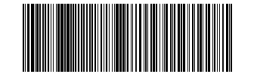

Scan the synthetic test barcode only after the test is active. Normal scanner capture stops during this test and stays paused until you reconnect in Scanner Setup. The test ends after one minute.

Ready to start.